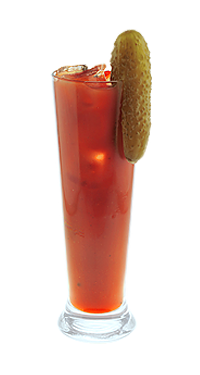

Наша Мэри — Знай наших!
Первая повесть о Дракуле была написана послом России в Венгрии 13 февраля 1486 года…
Легенда коктейля
Первая повесть о Дракуле была написана послом России в Венгрии 13 февраля 1486 года.
И пока на Западе о Дракуле писали, в России о нем знали не по наслышке...
(с) Авторский коктейль Александра Кана и Бека.
- Как приготовить:
-
- Наполни слинг кубиками льда доверху
- Налей водку 40 мл
- Налей в блендер: томатный сок 130 мл, ворчестер соус 5 мл и красный соус табаско 1 каплю
- Брось щепотку сельдереевой соли
- Выжми четвертинку лимона и взбей
- Перелей содержимое блендера в слинг
- Размешай коктейльной ложкой
- Укрась соленым огурцом